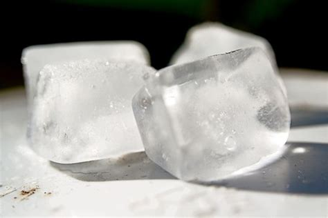

When taking a lemon off of your head, there are three things you want to make sure of. The weight of the lemon, the stickiness of the lemon, and taking the lemon off.
Checking the weight of the lemon is vital to keeping the lemon safe. This insures that the lemon doesn't get damaged on its way down your head, and that it doesn't make a loud noise. if you don't check the weight of the lemon, you may end up bruising it, damaging nearby equipment, and annoying your downstair neighbors. Although if your lemon does get bruised, worry not my friends, for the lemon has not lost its purpose. Bruised lemons are great for lemon juice, as the bruises make it easier to make the juice come out. Ideas include smoothies, lemonade, seasoning, and so much more. (the many different uses of lemon will be featured on a seperate blog.)

You now have to check the stickiness of the lemon. This is because if the lemon is even just a bit sticky, it may ruin or stick to your hair. If the lemon does stick to your hair by any chance, try and find a substance or a way to get it out. A common example is any kind of oil or grease (including soap) as well as ice.
Now that you've got the basics down, it's time for the hard part, taking the lemon off. There are an infinite number of ways to take a lemon off of your head. The simpelest most practical way is to hold it in both hands and lay it flat down on your table. When picking the lemon off, make sure to grip the lemon moderately. This is so that the lemon doesn't fall over, or you don't grip iit to hard and have it explode.
Congratulations! You have succesfully taken a lemon off of your head. You may now use the lemon in any way you like, wether it's for food, drinks, cleaning, or scent. Come along with us on our next tutorial on: "How to Store a Lemon".